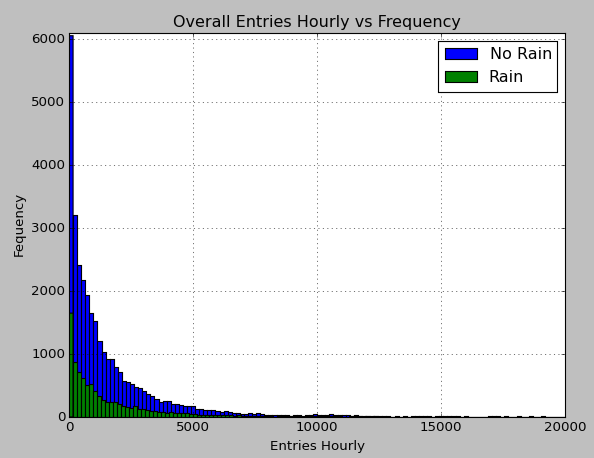
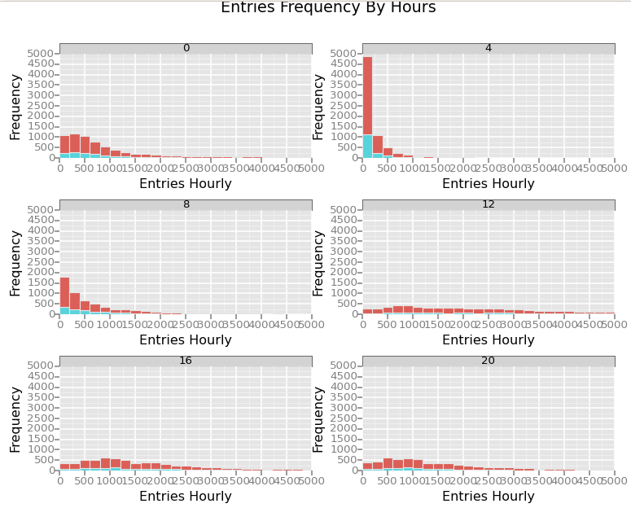
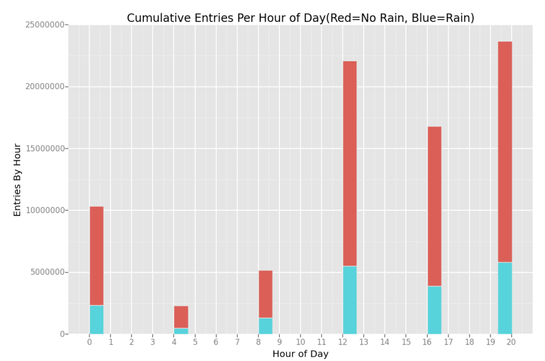
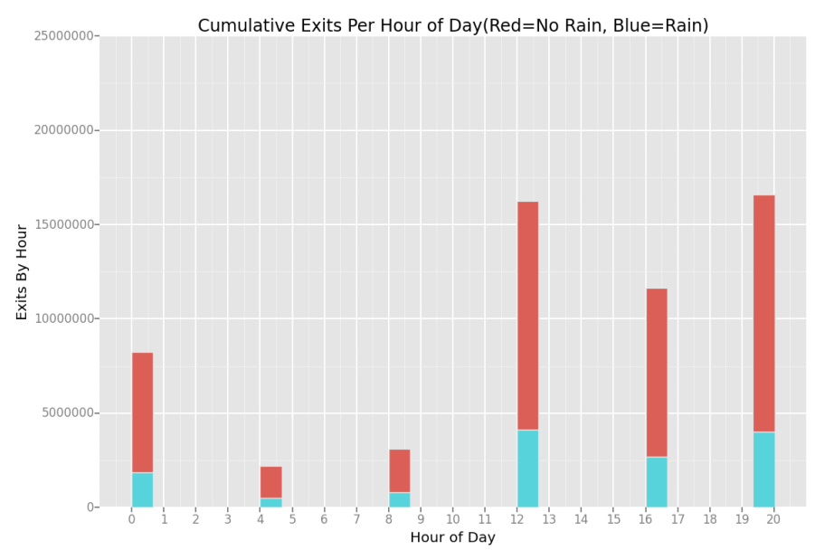

Analyzing the NYC Subway Dataset
Michal Nadolny
In this project, you look at the NYC Subway data and figure out if more people ride the subway when it is raining versus when it is not raining.
This project consists of two parts. In Part 1 of the project, you should have completed the questions in Problem Sets 2, 3, 4, and 5 in the Introduction to Data Science course. This document addresses part 2 of the project. Please use this document as a template and answer the following questions to explain your reasoning and conclusion behind your work in the problem sets. You will attach a document with your answers to these questions as part of your final project submission.
I have reworked a lot of code from my original submission which led me to better analysis based on my evaluation. My references are listed at the bottom of this document.
To start the project I first took a look at some sample data so I can understand the data structure through reading the csv into a dataframe, then using .head() to take a peek at the structure of the data as well as explored the weather variables in the pdf.
1.1 Which statistical test did you use to analyze the NYC subway data? Did you use a one-tail or a two-tail P value? What is the null hypothesis? What is your p-critical value?
I ran the Mann-Whitney U two-tail test which tests if two populations are the same. In this case the null hypothesis (H0) was: The count of turnstile entries during rain days and non rain days IS the same and NOT significantly different. My p-critical value was .05
1.2 Why is this statistical test applicable to the dataset? In particular, consider the assumptions that the test is making about the distribution of ridership in the two samples.
The Mann-Whitney U two tail test is applicable to the data set because the test does not assume the data is drawn from any particular probability distribution. There is also are a large set of values and the data is non-normal making this non-parametric test applicable.
1.3 What results did you get from this statistical test? These should include the following numerical values: p-values, as well as the means for each of the two samples under test.
MannWhitneyU test U= 153635120.5 , p= nan
Needed to calculate p manually because it is not calculating correctly
P value= 2.74134693571e-06 = 0.000002
P times two because two tailed= 5.48269387142e-06 = 0.000005
No Rain Entries Mean: 1845.53943866
Rain Entries Mean: 2028.19603547
1.4 What is the significance and interpretation of these results?
Since the resulted p-value 0.000005<0.05 this means the null hypothesis is rejected. This indicates the number of entries during rain days and non rain days is NOT the same and IS significantly different.
2.1 What approach did you use to compute the coefficients theta and produce prediction for ENTRIESn_hourly in your regression model:
Gradient descent (as implemented in exercise 3.5)
OLS using Statsmodels
Or something different?
To compute the coefficients theta and produce prediction for ENTRIESn_hourly in regression model I applied OLS using Statsmodels.
2.2 What features (input variables) did you use in your model? Did you use any dummy variables as part of your features?
I used rain, hour, tempi, pressurei, and EXITSn_hourly as input variables.
2.3 Why did you select these features in your model? We are looking for specific reasons that lead you to believe that the selected features will contribute to the predictive power of your model.
Here are the reasons for each:
Rain and hour were the main features needed to compare ridership.
Tempi because my intuition told me temperature would be a factor in how many people ride.
Pressurei was also based on intuition because I know may people that are affected with strong headaches when the pressure changes, makes them want to call out of work.
EXITSn_hourly was used as it drastically improved my R2 value from 0.349 to 0.593. However it also added the warning of there might be an indication that there are strong multicollinearity or other numerical problems in my summary.
2.4 What are the coefficients (or weights) of the non-dummy features in your linear regression model?
rain=83.099799
hour=56.682793
tempi=0.496865
pressurei=5.047889
EXITSn_hourly=0.819525
2.5 What is your model’s R2 (coefficients of determination) value?
My R2 value came out to be 0.593
2.6 What does this R2 value mean for the goodness of fit for your regression model? Do you think this linear model to predict ridership is appropriate for this dataset, given this R2 value?
The closer the R2 value it is to 1, the better the model is. Yes I think it is appropriate for this dataset as R2 is it closer to 1 than it is to 0. Here are more details to my OLS regression results:
print prediction.summary()
print prediction.params
print prediction.predict()
OLS Regression Results
==============================================================================
Dep. Variable: ENTRIESn_hourly R-squared: 0.593
Model: OLS Adj. R-squared: 0.593
Method: Least Squares F-statistic: 1.242e+04
Date: Sun, 08 Feb 2015 Prob (F-statistic): 0.00
Time: 14:54:10 Log-Likelihood: -3.8943e+05
No. Observations: 42649 AIC: 7.789e+05
Df Residuals: 42644 BIC: 7.789e+05
Df Model: 5
=================================================================================
coef std err t P>|t| [95.0% Conf. Int.]
---------------------------------------------------------------------------------
rain 83.0998 26.857 3.094 0.002 30.460 135.740
hour 56.6828 1.674 33.860 0.000 53.402 59.964
tempi 0.4969 1.377 0.361 0.718 -2.202 3.195
pressurei 5.0479 2.872 1.758 0.079 -0.581 10.676
EXITSn_hourly 0.8195 0.005 159.841 0.000 0.809 0.830
==============================================================================
Omnibus: 30026.619 Durbin-Watson: 1.292
Prob(Omnibus): 0.000 Jarque-Bera (JB): 1548963.926
Skew: 2.823 Prob(JB): 0.00
Kurtosis: 31.979 Cond. No. 6.39e+03
==============================================================================
Warnings:
[1] The condition number is large, 6.39e+03. This might indicate that there are
strong multicollinearity or other numerical problems.
rain 83.099799
hour 56.682793
tempi 0.496865
pressurei 5.047889
EXITSn_hourly 0.819525
dtype: float64
[ 180.32193989 405.26677701 863.89889568 ..., 872.88581053
1097.47808785 1320.33450774]Please include two visualizations that show the relationships between two or more variables in the NYC subway data. You should feel free to implement something that we discussed in class (e.g., scatter plots, line plots, or histograms) or attempt to implement something more advanced if you'd like.
Remember to add appropriate titles and axes labels to your plots. Also, please add a short description below each figure commenting on the key insights depicted in the figure.
3.1 One visualization should contain two histograms: one of ENTRIESn_hourly for rainy days and one of ENTRIESn_hourly for non-rainy days.
You can combine the two histograms in a single plot or you can use two separate plots.
If you decide to use to two separate plots for the two histograms, please ensure that the x-axis limits for both of the plots are identical. It is much easier to compare the two in that case.
For the histograms, you should have intervals representing the volume of ridership (value of ENTRIESn_hourly) on the x-axis and the frequency of occurrence on the y-axis. For example, each interval (along the x-axis), the height of the bar for this interval will represent the number of records (rows in our data) that have ENTRIESn_hourly that falls in this interval.
Remember to increase the number of bins in the histogram (by having larger number of bars). The default bin width is not sufficient to capture the variability in the two samples.

Here is an overall view of the Data. From this visualization we can see that the data is not normally distributed so we cannot run Welch's t test. The chart also shows there are a lot more rows of no rain days than rain days.
3.2 One visualization can be more freeform. Some suggestions are:
Ridership by time-of-day or day-of-week
Which stations have more exits or entries at different times of day
Here is another view more detailed view of how many people are entering on rainy and non rainy days for each of the sampled hours. We can observe at 4am there is a high frequency of data rows with small amounts of entries, most on non rainy days.

Here are some other interesting visualizations of data which shows the total volumes per hour on Entries and Exits. Here we can observe the highest cumulative ridership at the 20th hour, mostly with no rain. It also shows Entries and Exit volumes are distributed in similar hour patterns.

Please address the following questions in detail. Your answers should be 1-2 paragraphs long.
4.1 From your analysis and interpretation of the data, do more people ride the NYC subway when it is raining or when it is not raining?
From my analysis and interpretation of the subway turnstiles data it is inconclusive if more more people ride the NYC subway when it is raining or when it is not raining. The Mann-Whitney U two tail test concluded that there was a significant difference between ridership. Further analysis needs to take place to confirm and check other possibilities of why this data is the way it is. There are many more data points with non rainy days than with rainy days, and so the histograms look much larger, but this doesn't show us the average ridership.
4.2 What analyses lead you to this conclusion? You should use results from both your statistical tests and your linear regression to support your analysis.
A combination of Mann-Whitney U test, OLS stats, and the histogram helped me to make my conclusion. Visualizing the data with the use of colors to analyze rain was a good indicator of rain vs no rain across the entire data set. While No Rain Entries Mean was 1845.53943866 and Rain Entries Mean was 2028.19603547, the count of rows was 33,064 to 9,585 respectively. These numbers show more evidence that the data is inconclusive because there are more values of No Rain days.
Please address the following questions in detail. Your answers should be 1-2 paragraphs long.
5.1 Please discuss potential shortcomings of the methods of your analysis, including:
Dataset,
Linear regression model,
Statistical test.
In my analysis of the dataset I found that the precipi with it's relationship to time and station variables might have made more sense to analyze than the rain variable because it showed the exact precipitation inches, while the rain variable only indicated 1 if it rained at any point in the day. The data rows accounted for 5 different time intervals throughout the day. Ridership can vary based on if it is raining at the time in the day, not just that day overall. Some other variables that could have effect ridership could be events such as basketball, baseball games, and/or power outages due to rain.
For the linear regression model(OLS using Statsmodels) I could not get the R2 value higher than .40 without using the EXITSn_hourly field, which might be causing multicollinearity. It drastically improved my R2 value from 0.349 to 0.593. As for the statistical test MannWhitneyU two tailed, the code U,p=scipy.stats.mannwhitneyu(rain,norain) gave me a nan p value. Seemed however if I ran the same one line code on the Original Data set file, it did calculate correctly. The workaround was to calculate the new p value using the more lengthy code.
5.2 (Optional) Do you have any other insight about the dataset that you would like to share with us?
While sticking with my conclusion that more testing needed to be done, my brain stumbled upon another way to analyze the dataset. You can see it in my notebook right under the Overall Entries Hourly vs Frequency chart. This chart made me see that most of the no rains were with small amounts of Entries Hourly. This made me think to filter out(ignore) any row less than 2,500 Entries Hourly from both rain and non rain day. From there, I took a random sample of 2,000 rows from rain and no rain data and analyzed the means. I ran the test 2,000 times and everytime the mean was higher on rain days. This leads me to believe that ridership during rainy days is higher, but this is just an assumption and might not take more variables into consideration.
http://blog.yhathq.com/posts/ggplot-for-python.html
https://github.com/upjohnc/udacity
https://github.com/remondo/Udacity-DS101-IntroToDataScience
http://stats.stackexchange.com/questions/116315/problem-with-mann-whitney-u-test-in-scipy
http://docs.scipy.org/doc/numpy/reference/generated/numpy.mean.html
http://docs.scipy.org/doc/numpy/reference/generated/numpy.sum.html
http://statsmodels.sourceforge.net/devel/generated/statsmodels.regression.linear_model.OLS.html
http://en.wikipedia.org/wiki/Ordinary_least_squares
http://en.wikipedia.org/w/index.php?title=Linear_least_squares_(mathematics)
http://en.wikipedia.org/wiki/Polynomial_regression
http://blog.minitab.com/blog/adventures-in-statistics/how-high-should-r-squared-be-in-regres
sion-analysis
http://docs.scipy.org/doc/scipy/reference/generated/scipy.stats.describe.html